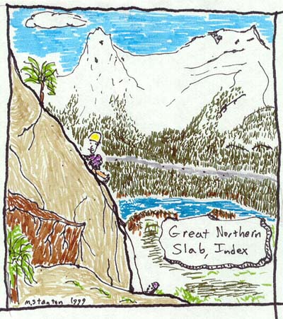

Index "Great Northern Slab"
- Great Northern Slab (5.7)
- March 7, 1999

Kris and I ran errands on Saturday, and the beautiful clear skies and sun beckoned. I was a good boy though, and actually enjoyed doing chores around the house like finally cleaning the garage. It was nice to see our new house in the sun. (We bought it in November, and as some of you around here know, there weren’t many dry, sunny days!).
For a long time, I had wanted to get back to this climb. I was introduced to it last June by Alex Krawarik, and was eager to get back and lead it. I had tried several times, but rain or a lack of partners prevented any action until now. Expecting an answering machine, I called John Bennett, and he picked up! “Sure! Sounds fun,” he said. As night fell, I crossed my fingers for good weather the next morning.
John arrived at 8, and we talked about hikes we had done and mountains we wanted to climb all the way there. The last in a series of fun topics was debating whether to buy camming devices of one brand or to mix and match. Being a cheapskate, unwilling to buy a full set of anything, I took the mix and match side.
One other party was at the base, but they climbed something else, so we were basically alone. The hardest part of the route today was the “3rd class” 10 foot climb to the base. Despite the presence of an old 3-rung ladder, this step can be very taxing. For John, the whole “multipitch climb” thing was a new experience, and the approach was very sobering. Luckily, I knew it got better.
I led the first pitch quickly, placing minimal gear on this 5.0 gully section. The rock was cold but dry. I had to wrap a sling around a chock-stone which doubled as a mouse latrine. This first pitch is actually a great first lead on gear. In the lower 20 feet, you can actually make lots of cam and nut placements for practice.
John came up, and gave me a few more cams, a nice small alien and a #3 Camelot. I used both, in addition to the rest of my gear. I had brought a double set of nuts in small-medium sizes, 1 red tri-cam, and 3 Metolius cams. This pitch is the highlight of the route. Rated at 5.6, the exposure is very satisfying, and the climbing sustained and fun. The crux is right after the belay, making use of an off-width crack to surmount a steep slab. After a little uncertainty, I passed this and came to the double hand/foot cracks, which continued up and across the slab in two parallel lines. These cracks took gear well, and the increasing exposure persuaded me to place it liberally. The sun came out and I was really beginning to have fun.
I clipped in to 4 sturdy bolts and pulled up the rap line tied to the back of my harness. John was ready to go, and I belayed him up. I think he should write about his experience. It was his first route on gear, and I know he was a little stressed. I remembered how I felt the first time last June. I haven’t improved much as a climber since then, but I felt like the climb was much easier. I concluded that it boils down to a fear of the unknown. John had no idea what I was belaying on…perhaps he assumed a few shaky pieces of tin quivering between loose boulders!
Only a little overwhelmed, John clipped to the security of the anchors, and I finished the climb, going up around a small tree to a frictiony slab, and the final tree belay. Very sad to see it end, I watched snowy Mt. Index across the road and belayed. John came up and we talked excitedly about the experience. Knowing that we would be able to get safely down from our sturdy tree anchor, he was now having tons of fun.
I threw the ropes for the double rappel to the end of the first pitch. Of course, they got tangled, and went the wrong way. It took several attempts halfway down the rock to finally get them running the right way. John’s rap was faster, since that tedious task was taken care of. We rapped down to the base, below the approach and coiled the ropes just as it started to snow. The early bird got the worm in this case…before it got icy and wet!
People had started arriving and were milling about the parking lot. It was 12:30 pm, and we drove home, happy for the chance to enjoy the good weather, and advance our skills just a little bit!